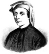

Daha ziyade takma adı “Fibonacci” ile tanınan Leanordo Pisano (1170-1250), hayatının büyük bölümünü Piza şehrinde geçirmiş İtalyan bir matematikçidir. Arap-Hindu sayı sisteminin ve ondalık gösterimin Batı’da yaygınlaşmasında çok önemli bir rol oynamış ve Orta Çağ matematiğinin gelişimine katkıda bulunmuştur.

Fibonacci esas olarak “Fibonacci dizisi” ile tanınmaktadır. Bu matematiksel konsept hem bir çocuğun anlayabileceği kadar basit hem de teorik sonuçlarını matematikçilerin yüzlerce yıldır tartışmasına neden olacak kadar derinliklidir.
Fibonacci dizisinde her rakam kendinden önce gelen iki rakamın toplamına eşittir. Dizi 1, 1, 2, 3, 5, 8, 13, 21, 34... şeklinde başlar. Fibonacci dizisinin örneklerine kimi zaman doğada da rastlamak mümkündür. Örneğin; ayçiçeği yapraklarının eş merkezli düzenlemesinde, enginar yapraklarında, kozalakta.... Dizi, sanat dünyasında altın oranını belirlemek için de kullanılmıştır. Bu oran Rönesans dönemi ressamları arasında çok popülerdi. Altın oranının göze çok hoş geldiğine inanılmaktaydı.
Fibonacci Pisa’da doğmuş ama gençliğinin büyük bölümünü Kuzey Afrika’da geçirmiştir. Babası burada diplomat olarak çalışmaktaydı. Arap coğrafyasında yetiştiği için Arap-Hindu sayı sistemini öğrenmiştir. Bunun Avrupa’da kullanılmakta olan Roma rakamlarından çok daha üstün olduğunu anlaması hiç de uzun sürmemiştir. Gerçekten de Pisa’ya döndükten sonra 1202 yılında yayınladığı Liber Abaci’nin asıl amacı Arap-Hindu sayı sisteminin üstünlüğünü ortaya koymaktı.
Fibonacci geometri ve sayı sistemi ile ilgili kimileri kaybolmuş çok sayıda kitap yazmıştır. Eserleri Kutsal Roma İmpararotoru 2. Frederik’in (1194-1250) dikkatini çekmiş ve bir matematik meraklısı olan imparator ona bir dizi problem sunarak meydan okumuştur. Fibonacci 1225 yılında bunları çözmeyi başarmıştır. Bunun üzerine Fibonacci’ye Pisa şehrinde emeklilik maaşı bağlanmış ve burada 80 yaşında ölmüştür.
Ek Bilgiler
1- Fibonacci’nin takma adı Latince “filius” ve “bonacci” kelimelerinden türetilmiştir. Bonacci’nin oğlu anlamına gelmektedir. Bonacci ise babası Guglielmo’nun lakabıdır.
2- Fibonacci’nin yaşadığı dönemde memleketi Piza bağımsız bir cumhuriyetti. 1406 yılında bir başka şehir devleti olan Floransa tarafından fethedildi.
3- 1963 yılında yayınlanmaya başlayan “The Fibonacci Quarterly”, Fibonacci’nin çalışmalarına adanmış süreli bir yayındır.